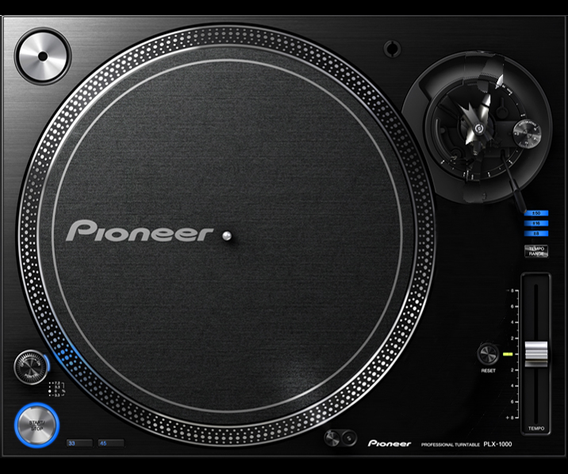

<!DOCTYPE html>
<html lang="en">
<link rel="stylesheet" type="text/css" href="mainStyle.css">

<head>
    <meta charset="UTF-8">
    <title>Title</title>
    <script>
        window.onload = function () {
            var theCanvas = document.getElementById('bgCanvas');
            var ctx = theCanvas.getContext("2d");
        }
    </script>
    <script src="https://code.createjs.com/easeljs-0.8.2.min.js"></script>

</head>
<body>
    <div id="bgDiv">

            <div id="leftBackgroundImage">
                


            </div>
            <div id="canvasDiv">
                <!---->
                <canvas id="bgCanvas"></canvas>
                <script>
                    var needleCanvas = new createjs.Stage("needle");

                        var canvas = document.getElementById('bgCanvas');
                        var ctx = canvas.getContext('2d');
                        var img = new Image();
                    needleCanvas.onload = function (){
                        var bitmap = new createjs.Bitmap("needle.png");
                        needleCanvas.addChild(bitmap);
                        needleCanvas.update();
                    };
                        var ang = 0; //angle
                        var fps = 1000 / 25; //number of frames per sec
                        img.onload = function () { //on image load do the following stuff
                            canvas.width = this.width << 1; //double the canvas width
                            canvas.height = this.height << 1; //double the canvas height
                            var cache = this; //cache the local copy of image element for future reference
                            setInterval(function () {
                                ctx.save(); //saves the state of canvas
                                //ctx.clearRect(0, 0, canvas.width, canvas.height); //clear the canvas
                                ctx.translate(cache.width / 0.86, cache.height / 1.05); //let's translate
                                ctx.rotate(Math.PI / 180 * (ang += 5)); //increment the angle and rotate the image
                                ctx.drawImage(img, -cache.width / 2, -cache.height / 2, cache.width, cache.height); //draw the image ;)
                                ctx.restore(); //restore the state of canvas
                            }, fps);
                        };

                        img.src = 'record.png'; //img


                    var canvas = document.getElementById('bgCanvas');
                    var context = canvas.getContext('2d');
                    var imageObj = new Image();
                    var cv = context.width;
                    var ch = context.height;
                    imageObj.onload = function() {
                        context.clearRect(0, 0, cv, ch);
                        context.drawImage(imageObj, canvas.width / 3.3, canvas.height / 4.7, 933*0.75, 660*0.8);
                    };
                    imageObj.src = 'recordPlayer.png';
                    //imageObj.height = '80%';

                </script>
            </div>


            <div id="rightBackgroundImage">
                
            </div>

    </div>
</body>
</html>